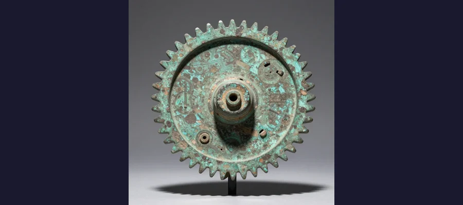
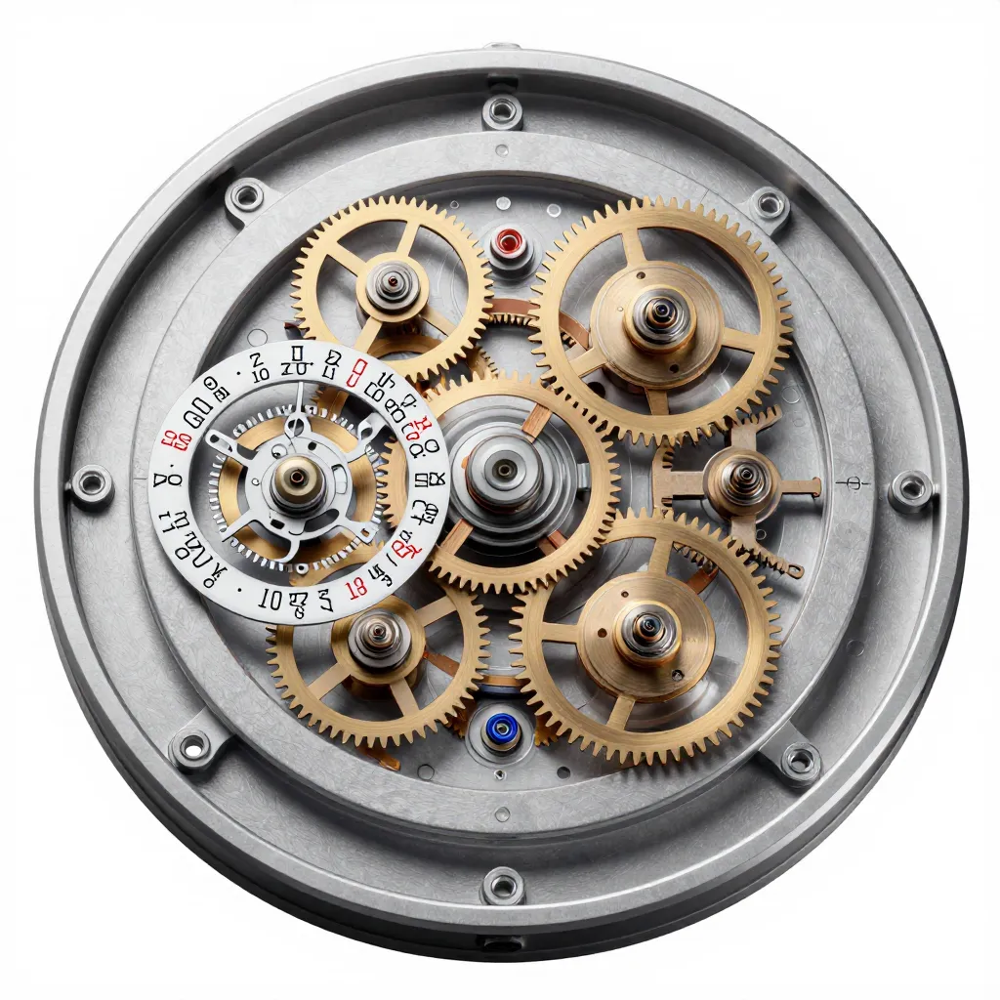

The Antikythera Mechanism: An Ancient Greek Computer 1,500 Years Ahead of Its Time

The Antikythera Mechanism, recovered from a Roman shipwreck in 1901, is the world's oldest known analog computer — built over 2,000 years ago.
In the spring of 1901, a team of Greek sponge divers exploring a Roman-era shipwreck off the tiny island of Antikythera — a rocky outcrop between Crete and the Peloponnese — pulled from the seabed a shapeless, corroded lump of bronze about the size of a large book. It was nearly overlooked. The wreck, dating to approximately 70-60 BCE, had already yielded spectacular treasures: marble and bronze statues, glassware, jewelry, coins, and a seven-foot bronze figure of Hercules. The lump, encrusted with two thousand years of marine concretion, looked like nothing important. It was catalogued, placed in a storage crate at the National Archaeological Museum in Athens, and largely forgotten. It sat in a museum drawer for months before anyone noticed that the corrosion had cracked open to reveal something extraordinary: the outlines of tiny, precisely cut bronze gears, inscribed with ancient Greek text. What the sponge divers had found was not a statue or a tool. It was a machine — the most sophisticated technological artifact to survive from the ancient world. The Antikythera Mechanism, as it came to be known, was an analog computer built around 150-100 BCE, capable of predicting solar and lunar eclipses, tracking the movements of the five known planets across the zodiac, calculating the dates of the ancient Olympic Games, and reproducing the irregular motion of the Moon through the sky. Nothing remotely comparable would appear in Europe for another 1,500 years. It is, in the words of the mathematician and historian Tony Freeth, "the most extraordinary surviving artifact from the ancient world — and the most mysterious."
The Antikythera Mechanism challenges everything we thought we knew about ancient Greek technology. The Greeks, we are told, were brilliant philosophers and mathematicians but poor engineers — their civilization produced geometry and drama, not clockwork. The Antikythera Mechanism shatters that assumption. It contains at least 30 interlocking bronze gears with teeth cut to a precision of a fraction of a millimeter, housed in a wooden case the size of a mantel clock. It embodies mathematical knowledge — including the Metonic cycle of 235 lunar months, the Saros eclipse cycle of 223 lunar months, and the Callippic cycle of 940 lunar months — that was not supposed to have been mechanized until the European astronomical clocks of the fourteenth century CE. It is, in short, an impossibility — except that it exists, and we can touch it, and we still cannot fully explain how it was made or who made it.
Discovery: A Lump of Bronze That Changed History
The story of the Antikythera Mechanism begins not with archaeologists but with sponge divers. In the autumn of 1900, a crew of Greek sponge fishermen led by Captain Dimitrios Kondos was sailing back to their home island of Syme when a storm forced them to shelter near the small island of Antikythera. While waiting for the weather to clear, one of the divers — Elias Stadiatis — descended to the seabed and found something extraordinary: the wreckage of an ancient ship lying at a depth of approximately 45 meters (150 feet), scattered with statues, amphorae, and other artifacts. Kondos reported the find to the Greek authorities, and in 1900-1901, the Greek Navy and the Greek government organized the first major underwater archaeological excavation in history.
The salvage operation was extraordinarily dangerous. Divers worked at the limits of breath-hold and early diving suit technology, descending to a hostile depth in poor visibility to retrieve artifacts by hand. Several divers suffered nitrogen narcosis and one died. The haul was spectacular: bronze and marble statues (including the famous Antikythera Ephebe and the Philosopher), pottery, glassware, coins, jewelry, and the corroded bronze lump that would become the most important find of all. The mechanism was initially categorized as a "bronze mass" and attracted little attention. It was not until 1902, when the archaeologist Valerios Stais examined the object and noticed gear teeth and Greek lettering visible through the corrosion, that its significance began to emerge. Stais speculated that the object might be an astrolabe — an ancient astronomical instrument — but his suggestion was largely ignored by a scholarly establishment that could not conceive of such complex technology existing in the ancient world.
⏱ Over 1,500 Years Ahead of Its Time
To put the Antikythera Mechanism in perspective, consider this: the device was built around 150-100 BCE, during the final centuries of the Hellenistic Greek civilization. The next comparable mechanical device — the astronomical clocks of medieval European cathedrals — did not appear until the fourteenth century CE. The famous Astrarium of Giovanni de Dondi, built in Padua around 1364, is often cited as the next known device of comparable complexity — over 1,400 years later. The Antikythera Mechanism represents a technological tradition that was utterly lost to Western civilization for a millennium and a half. It is as if someone had built a steam engine in the Stone Age and then the knowledge simply vanished. The mechanism forces us to confront an uncomfortable question: how much other ancient technology has been lost? The myths of Atlantis and the lost treasures of the ancient world suddenly seem less far-fetched when you hold in your hands a 2,100-year-old computer.

Fragment A of the Antikythera Mechanism, on display at the National Archaeological Museum in Athens. The corroded bronze conceals one of the most sophisticated machines of the ancient world.
Revealing the Machine: From X-Rays to Digital Reconstruction
For decades after its discovery, the Antikythera Mechanism remained a puzzle that scholars could see but not read. The surviving fragments — 82 pieces in total, including 30 identifiable gear wheels — were too corroded and fragile to be dismantled or cleaned. The breakthrough came in the 1950s, when the British physicist and science historian Derek J. de Solla Price began studying the mechanism using X-ray radiography. Price was the first to recognize the full complexity of the gear system and to argue convincingly that the device was an astronomical computer. His 1959 paper in Scientific American, titled "An Ancient Greek Computer," brought the mechanism to worldwide attention and established the framework for all subsequent research.
The next great leap came in 2005, when the Antikythera Mechanism Research Project — an international team of scientists, astronomers, and historians — used high-resolution X-ray tomography and polynomial texture mapping (a technique originally developed for reading ancient manuscripts) to peer inside the corroded fragments with unprecedented clarity. The results were staggering. The team was able to read inscriptions that had been invisible for two thousand years — essentially finding a user's manual written on the mechanism itself in ancient Greek. They identified new gears, reconstructed the layout of the front and back dials, and confirmed that the device could track:
- The Egyptian civil calendar (365 days) and the zodiac on the front dial, with pointers showing the positions of the Sun, Moon, and five known planets (Mercury, Venus, Mars, Jupiter, Saturn)
- The Metonic cycle (235 lunar months = 19 solar years) on the upper back dial, used to reconcile the lunar and solar calendars
- The Saros cycle (223 lunar months) on the lower back dial, used to predict solar and lunar eclipses — including a remarkable miniature spiral inscribed with the months and hours of predicted eclipses
- The Callippic cycle (940 lunar months = 76 solar years) on a subsidiary dial, providing a more accurate calendar correction
- The four-year cycle of ancient athletic games, including the Olympic Games, the Nemean Games, the Isthmian Games, and the Pythian Games — a surprising feature that linked astronomy to the cultural calendar of the Greek world
Who Built the Antikythera Mechanism?
The identity of the mechanism's creator is one of the most debated questions in the history of technology. The device is too sophisticated to be the work of a single unknown craftsman — it must have been the product of a well-established tradition of geared astronomical instruments. Several candidates have been proposed:
- Hipparchus of Nicaea (c. 190-120 BCE) — the greatest astronomer of antiquity, whose theory of the Moon's motion is encoded in the mechanism's gear train. Hipparchus worked on Rhodes, and the ship carrying the mechanism may have originated from there. However, some features of the mechanism predate Hipparchus's later work.
- Archimedes of Syracuse (c. 287-212 BCE) — the legendary mathematician and engineer who built planetaria and mechanical devices. While Archimedes died before the mechanism was built (probably by at least 50 years), his intellectual legacy may have inspired it. The Roman statesman Cicero wrote that Archimedes had constructed two sphere-shaped astronomical devices that were brought to Rome after the sack of Syracuse.
- The school of Posidonius on Rhodes — Posidonius (c. 135-51 BCE) was a Stoic philosopher and astronomer who maintained a famous school on the island of Rhodes. Cicero visited Posidonius on Rhodes and described a device that "at each revolution reproduces the same motions of the sun, the moon, and the five wandering stars." This description closely matches the Antikythera Mechanism.
🔬 The 2021 Cosmic Eclipse Predictor
In 2021, a team led by Tony Freeth of University College London published a groundbreaking paper in the journal Scientific Reports describing a new reconstruction of the mechanism's front dial — the part that displayed the movements of the Sun, Moon, and planets. Using inscriptions on the mechanism as a guide, the team created a cosmos display that showed the five known planets moving in real time against the backdrop of the zodiac. The reconstruction solved one of the last major puzzles of the mechanism: how the ancient Greeks had managed to represent the retrograde motion of the planets (the apparent backwards movement of Mars, Jupiter, and Saturn as seen from Earth) using only gear wheels. The solution involved an ingenious system of epicyclic gearing — gears riding on other gears — that reproduced the elliptical orbits of the planets with astonishing accuracy. The team also identified what may be the earliest known cosmic eclipse predictor in the mechanism's Saros dial — a spiral scale that could predict the exact date, time, and characteristics of eclipses decades in advance. This was predictive astronomy of a sophistication that would not be matched until the Renaissance, achieved by Greek craftsmen using bronze and hand tools more than two thousand years ago.

A digital reconstruction reveals the full complexity of the Antikythera Mechanism's gear system — over 30 interlocking bronze gears that tracked the cosmos.
A Single Artifact That Rewrote History
The significance of the Antikythera Mechanism extends far beyond its technical sophistication. It forces a fundamental reassessment of ancient Greek engineering capability and, by extension, of the entire trajectory of Western technology. Before the mechanism was understood, the prevailing scholarly view was that the Greeks were brilliant theoreticians who disdained practical mechanics — that their engineering achievements were limited to temples, aqueducts, and simple machines like levers and pulleys. The Antikythera Mechanism demolishes this view. It demonstrates that at least some Greek craftsmen possessed precision engineering skills comparable to those of eighteenth-century European clockmakers — including the ability to cut gear teeth to tolerances of a tenth of a millimeter, to design complex epicyclic gear trains, and to encode advanced astronomical mathematics into physical machinery.
The mechanism also raises profound questions about technological loss. If the Greeks could build analog computers in the second century BCE, why was this knowledge lost? Why did Europe wait until the fourteenth century CE to develop comparable devices? The answer likely lies in the collapse of the Hellenistic world — the destruction of the great centers of learning at Alexandria, Rhodes, and Pergamon by the Roman conquest and later by the rise of Christianity and Islam, which transformed the intellectual landscape of the Mediterranean. The Antikythera Mechanism may represent the pinnacle of a technological tradition that was systematically extinguished over centuries, its practitioners killed or dispersed, its knowledge unwritten and therefore unrecoverable. In this sense, the mechanism is not just a remarkable artifact — it is a monument to what was lost when ancient civilization collapsed. It stands as a reminder that progress is not inevitable, that knowledge can be destroyed as easily as it is created, and that the historical record is full of gaps we may never fill. The Rosetta Stone gave us the key to reading Egyptian hieroglyphs; the Dead Sea Scrolls transformed our understanding of ancient Judaism; the ruins of Pompeii preserved a Roman city in aspic. The Antikythera Mechanism does something equally profound: it proves that the ancient Greeks achieved a level of mechanical engineering that we had no idea they possessed.
🚩 Ongoing Research: Return to the Wreck
The Antikythera shipwreck continues to yield new discoveries. In recent years, teams of marine archaeologists led by the Greek Ephorate of Underwater Antiquities and international partners have returned to the wreck site using advanced diving technology — including autonomous underwater vehicles (AUVs) and closed-circuit rebreathers — that allow them to explore at depths impossible for the original sponge divers. New finds have included additional fragments of statues, human remains, and pieces of the ship itself. In 2012, researchers using a metal detector on the seabed identified what may be additional fragments of the Antikythera Mechanism — bronze pieces that could help complete the reconstruction. The Antikythera Mechanism Research Project continues its work, using ever more advanced imaging techniques to read the surviving inscriptions and reconstruct the full gear train. The possibility that additional fragments — or even a second, more complete mechanism — may still lie on the seabed drives the ongoing exploration. Every dive brings the potential for a discovery as revolutionary as the unearthing of the Terracotta Army or the excavation of Tutankhamun's tomb. The sea has kept its secrets for two thousand years. It may not be finished revealing them.
⚙ The World's First Computer — And Its Greatest Mystery
The Antikythera Mechanism is the most important technological artifact to survive from the ancient world. It is also the most humbling. This small, corroded box of bronze gears, pulled from a Roman shipwreck by sponge divers in 1901, demonstrates that the ancient Greeks achieved a level of mechanical sophistication that was not matched in Europe until the late Middle Ages — a gap of more than 1,400 years. It predicts eclipses with accuracy. It tracks the planets across the zodiac. It calculates the dates of the Olympic Games. It encodes the most advanced astronomical mathematics of the Hellenistic world into a machine that fits in your hands. And yet we do not know who built it, where it was built, or how the knowledge required to build it was lost. The Antikythera Mechanism is a message from a civilization that was more advanced than we imagined — and that was more thoroughly erased from history than we like to admit. It is the ultimate reminder that the past is deeper, stranger, and more capable than the present generally assumes. The world's first computer sits in a glass case in Athens, its gears silent for two thousand years, its makers unknown, its secrets still unfolding. It is the oldest mystery machine in existence — and it may still have more to teach us.
Frequently Asked Questions
What is the Antikythera Mechanism?
The Antikythera Mechanism is an ancient Greek analog computer built around 150-100 BCE to predict astronomical events. It could track the positions of the Sun, Moon, and five known planets, predict solar and lunar eclipses using the Saros cycle, calculate the Metonic cycle of lunar and solar calendar reconciliation, and determine the dates of the ancient Olympic Games. It is the oldest known analog computer and the most sophisticated technological artifact to survive from the ancient world.
Where was the Antikythera Mechanism found?
The mechanism was discovered in 1901 by Greek sponge divers exploring a Roman-era shipwreck off the island of Antikythera, a small island between Crete and the Peloponnese in the Aegean Sea. The wreck lies at a depth of approximately 45 meters (150 feet). The mechanism was found among a cargo of statues, glassware, jewelry, and other artifacts dating to approximately 70-60 BCE.
How old is the Antikythera Mechanism?
The mechanism is dated to approximately 150-100 BCE, based on the style of its inscriptions, the astronomical knowledge it encodes, and the dating of the shipwreck in which it was found. This makes it over 2,100 years old. The next comparable European device — the astronomical clocks of medieval cathedrals — did not appear until the fourteenth century CE, making the Antikythera Mechanism more than 1,400 years ahead of its time.
Who invented the Antikythera Mechanism?
The creator is unknown. The leading candidates include the astronomer Hipparchus of Nicaea (whose lunar theory is encoded in the mechanism), the philosophical school of Posidonius on Rhodes (which Cicero described as producing astronomical devices), and the intellectual legacy of Archimedes of Syracuse (who built planetaria but died before the mechanism was created). The mechanism was likely the product of a well-established tradition of Greek astronomical instrument-making, rather than the work of a single genius.
📖 Recommended Reading
Want to learn more? Check out Decoding the Heavens by Jo Marchant on Amazon for a deeper dive into this fascinating topic. (As an Amazon Associate, we earn from qualifying purchases.)
References & Further Reading
- Wikipedia: Antikythera Mechanism — Comprehensive article on the mechanism's discovery, design, gear system, and ongoing research
- Wikipedia: Antikythera Shipwreck — The Roman-era wreck where the mechanism was found and the ongoing excavation
- Wikipedia: Hipparchus — The Greek astronomer whose lunar theory may be encoded in the mechanism's gears
- Wikipedia: Derek J. de Solla Price — The physicist who first recognized the mechanism as an ancient computer through X-ray analysis
- Wikipedia: Orrery — The class of mechanical models of the solar system to which the Antikythera Mechanism belongs
- Wikipedia: Posidonius — The Rhodian philosopher whose school may have produced the mechanism
Editorial note: reconstructions are continuously revised as imaging and inscription studies improve. See our Editorial Policy.